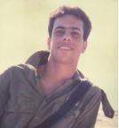

רקעעמותת זיו נעורים נוסדה בספטמבר 2000 על ידי יוצאי הקומנדו הימי, ונקראה על שם זיו לוי ז"ל, לוחם שייטת 13, אשר נפל בעת מילוי תפקידו. מעז יצא מתוק. חבריו הקימו את העמותה כיוזמה חברתית המשלבת את אהבת הים עם טיפוח נוער.סיפור חייו של זיוזיו בן בת שבע ויוסף נולד בת"א וגדל שם כל חייו, למד בביה"ס יסודי "בבלי" והמשיך את לימודיו בביה"ס התיכון עירוני ד' במגמה הריאלית והצטיין בלימודיו. כחלק מלימודיו השתתף זיו בפרוייקט נוער שוחר מדע באונברסיטת ת"א. היה חבר בתנועת הצופים ואף הדריך כמד"צ. זיו היה בחור חייכן ושקט, הוא לקח את הדברים ברצינות וידע לגייס מעצמו כוחות רבים (ולרוב מוסתרים) לצורך ביצוע משימותיו החיוך, הצניעות וטוב הלב שבו היוו סימן ההיכר ובלטו מאוד בדמותו. לקראת גיוסו לצה"ל רצה זיו לשרת כטייס בחיל האויר אולם שקיבל זימון לחיל הים מייד התאהב בים והחליט לשרת בקומנדו הימי. חבריו ובני משפחתו מספרים כיצד התאמן ופיתח את כושרו הגופני לפני הגיוס. הם אף מציינים שהוא הרבה לקרוא חומר רב על הים והפך את הנושא למרכז חייו. זיו היה חובב מוסיקה, ספרי מדע בדיוני וסרטי אימה. כשהתגייס לשייטת הבית הפך למרכז מפגש חברתי של כל חבריו שהגיעו לבקרו בחופשות הקצרות. הוא מעולם לא התלונן על הקושי בשרות ועל ההתמודדיות הקשות שעבר במהלך השרות.סיפור נפילתושלשה שבועות לפני שסיים מסלול קשה ומתיש של 20 חודש, בשלב האחרון בהכשרתו כלוחם, יצא הצוות לבצע אימון קשה ומורכב בים. האימון כלל שחיה וצלילה בלילה. התקופה היתה בחודש פברואר והים היה קר מאוד וגלי. במהלך השחיה - שהיתה קשה כשלעצמה- סיפרו החברים שהביטו בזיו שהיה לו חיוך גדול מאוזן לאוזן על הקושי האדיר שנדרש ממנו ומכול הצוות לבצע את האימון. בהמשך לאחר קטע צלילה נזרקנו כולנו על הסלעים עכב הגלים והזרמים שהיו באותו אזור. לצוות לקח כמה דקות להתארגן ואז הבחינו שזיו חסר. מיד התחילו לחפש בסביבה אך לצערם לא נמצא סימן. כל הלילה הואר האזור בפצצות תאורה ורבים הצטרפו לחיפושים, שעות ישבו המחפשים מול הים מביטים בכל ניצנוץ של גל מקווים ומצפים שיהיה זה הפנס של זיו. בהמשך הלילה מצב הים החמיר והתחזקו הרוח והגלים, כך שלא היה ניתן להמשיך ולחפש בים אלה רק לחכות לנס! למחרת בבוקר לאחר שעלתה השמש נמצאה גופתו של זיו על חוף הים כקילומטר ממקום העדרותו. לאחר המקרה, התוודעו חבריו של היחידה למשפחתו של זיו ולחבריו מהתיכון. והסתבר להם שזיו התל-אביבי הוא שונה מזיו שהם הכירו בצבא. הוא היה מרכז העניניים של חבריו. מעין עמוד תווך חברתי ואפילו אישי מאוד לחלק מהאנשים. גם בחייו האזרחיים ניכרה רצינותו הרבה וההשקה הכמעט טוטלית שהשקיע במה שאהב ורצה להשיג. הוא התמיד ודרש מעצמו הרבה עד שהשיג את מבוקשו. ביום ד' באדר תש"ן נפל סמ"ר זיו לוי בעת מילוי תפקידו והובא למנוחות עולמים בבית הקברות הצבאי בקרית שאול, יהי זכרו ברוך. |
 |